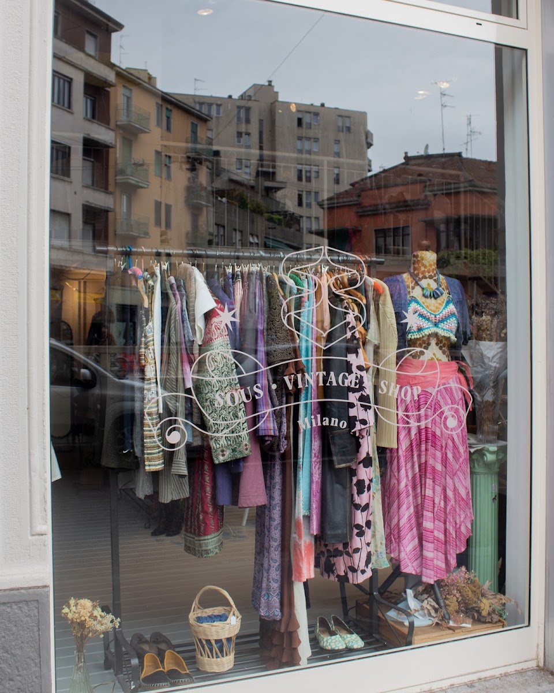

Vintage · upcycling · Navigli, Milano
Sous Vintage Shop
Abiti che dicono qualcosa.
Seconda mano di ricerca, capi rimessi a nuovo e pezzi unici, in una vetrina liberty sull'Alzaia Naviglio Pavese. Vieni a scavare — o sfoglia il nostro Etsy.
Pezzi unici · nuovi arrivi ogni settimana

Un piccolo archivio
sui Navigli
Sous è un negozio di vintage come lo vorremmo trovare noi: niente cassoni da rovistare a caso, ma una selezione fatta a mano — capi cercati, scelti e appesi con un'idea. Accanto alla seconda mano di ricerca ci sono progetti di designer indipendenti e capi upcycled, cuciti da tessuti che avrebbero avuto un'altra fine.
Lo spazio è luminoso e un po' giocoso, coi suoi toni pastello e un décor che sa di altri tempi. Ci si entra per curiosare e si esce con qualcosa che non ha nessun altro. Perché quasi ogni pezzo, da noi, è uno solo.
- 100%selezione fatta a mano
- 1 di 1quasi ogni capo è un pezzo unico
- ∞nuovi arrivi ogni settimana
Cosa trovi da Sous
Quattro anime nello stesso negozio.
-
01
Vintage donna
Abiti, gonne, camicie e capispalla di ricerca: stampe, tessuti e tagli che oggi non si fanno più.
-
02
Vintage uomo
Giacche, maglieria, camicie e capi da lavoro: il guardaroba maschile con una storia già addosso.
-
03
Upcycling & indie
Capi rimessi a nuovo e progetti di designer indipendenti: pezzi unici, cuciti da tessuti recuperati.
-
04
Homeware
Piccoli oggetti per la casa, curati con lo stesso occhio: complementi eclettici che raccontano qualcosa.
Una parte della selezione è anche sul nostro Etsy — ma il bello è scavare di persona.
Perché vintage
«Un vestito che ha già vissuto porta con sé una storia — e non ne troverai un altro uguale.»
-
Unico, davvero
Non produzioni in serie: ogni capo è quello, e basta. Il modo più semplice di non vestirsi come tutti gli altri.
-
Moda che non spreca
Seconda mano e upcycling: diamo una seconda vita ai vestiti invece di comprarne di nuovi. Bello e sostenibile insieme.
-
Un consiglio è di casa
Ci piace far provare, abbinare, raccontare da dove viene un pezzo. Entra anche solo per una chiacchiera di stile.
Il negozio, anche da casa
Una selezione dei nostri pezzi vive sul nostro shop Etsy, con spedizione ovunque. E ogni nuovo arrivo lo raccontiamo su Instagram: seguici per non perdere il capo giusto.
Orari e dove
Sull'Alzaia del Naviglio Pavese, vetrina liberty.
| Lunedì | chiuso |
|---|---|
| Martedì – Sabato | 11:30 – 19:00 |
| Domenica | 15:30 – 19:00 |
20143 Milano — Navigli
M2 Porta Genova, dieci minuti a piedi lungo il Naviglio
Vetrina LGBTQ+ friendly: qui è il benvenuto chiunque abbia voglia di frugare tra le grucce.